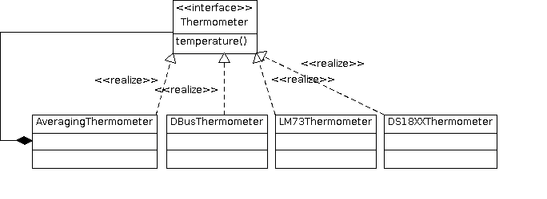

Composite¶
Examples¶
Unix Filesystem¶
A typical directory structure:
{kind=link}
A hypthetical class diagram:

Boolean Expressions¶

Thermometers, And Average Calculation¶
Exercise¶
Implement the following test:
#include <gtest/gtest.h>
#include <sensor-const.h>
#include <sensor-avg.h>
TEST(composite_suite, basic)
{
ConstantSensor cs1(3);
ConstantSensor cs2(4);
Sensor* s1 = &cs1; // <--- is-a Sensor
Sensor* s2 = &cs2; // <--- is-a Sensor
AveragingSensor avg; // <-- uses-many Sensor
avg.add(s1);
avg.add(s2);
Sensor* s = &avg; // <-- is-a Sensor
ASSERT_FLOAT_EQ(s->get_temperature(), 3.5);
}
Maybe, as a C++ 11 excursion, lets implement real initialization,
and omit the add() method. This way it becomes impossible to
add() another member to the composite object at the time it is
already being used.
Note
This step is optional!
/trainings/material/soup/cxx-code/design-patterns-composite/tests/composite-suite-initializer-list.cpp¶#include <gtest/gtest.h>
#include <sensor-const.h>
#include <sensor-avg.h>
TEST(composite_suite, initializer_list)
{
ConstantSensor cs1(3);
ConstantSensor cs2(4);
AveragingSensor avg{&cs1, &cs2};
ASSERT_FLOAT_EQ(avg.get_temperature(), 3.5);
}